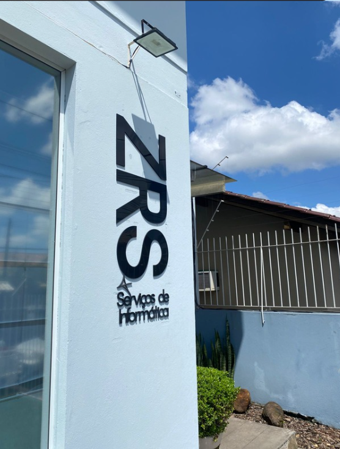

Quem Somos
Tradição de 25 anos unida à agilidade da nova era digital.
Nossa História
A ZRS Informática não nasceu ontem. Nossa autoridade é fundamentada em uma trajetória de mais de 25 anos de competência no setor de tecnologia no Vale do Sinos.
Atravessamos diversas eras da computação: desde a implementação das primeiras redes locais até a complexidade da computação em nuvem e segurança moderna. Essa permanência em um setor marcado pela obsolescência rápida prova nossa capacidade adaptativa robusta.

Presença Local
Com sede estratégica em Novo Hamburgo, atendemos com agilidade as cidades de Ivoti, Dois Irmãos e Estância Velha.
Nossos Diferenciais
SLA & Agilidade
Atendimento personalizado que entende a urgência do seu negócio.
Foco no Cliente
"Sua necessidade é nossa especialidade" — transição do foco em hardware para a continuidade do negócio.
Transparência
Processos estruturados e relatórios claros de cada intervenção.